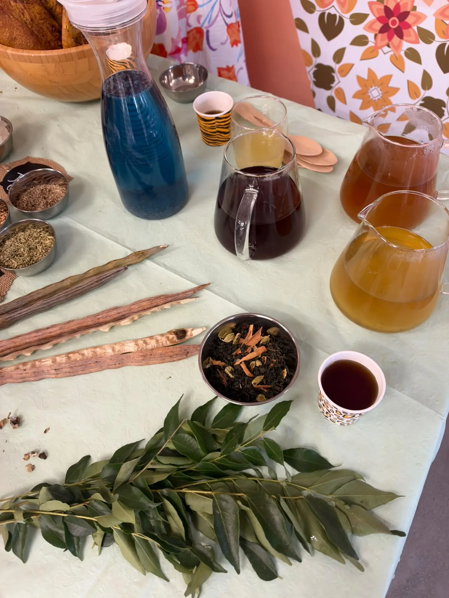
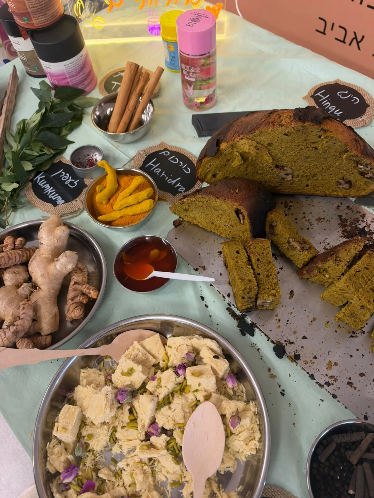
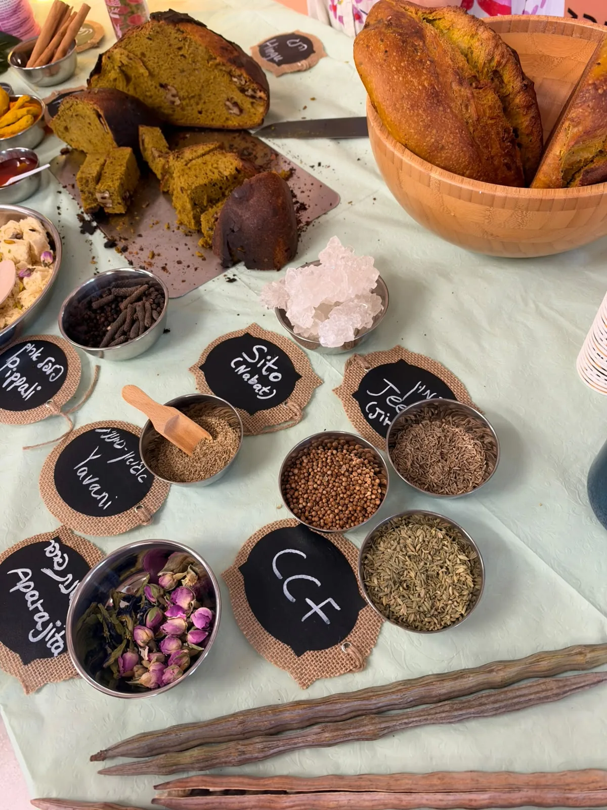
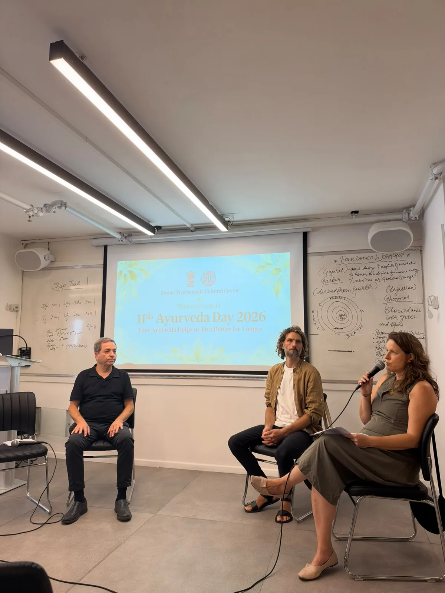
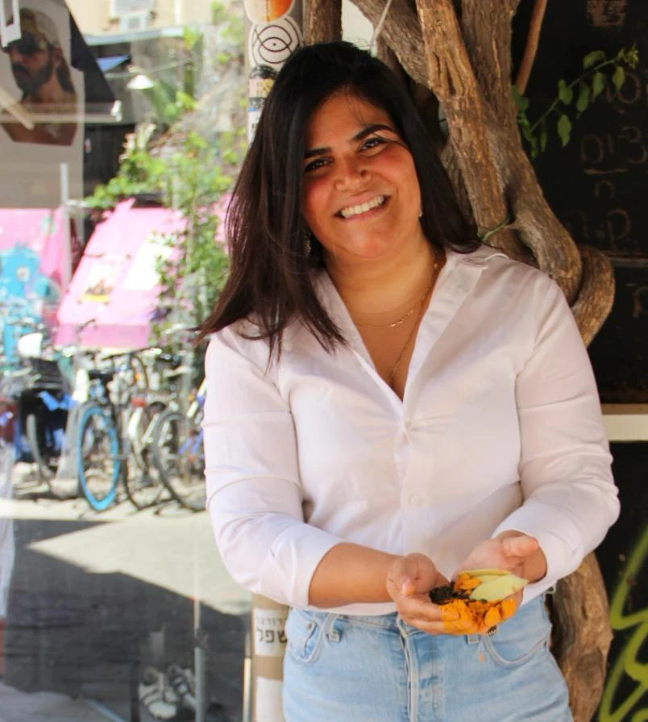

טועמים חליטות, מכירים תבלינים ומדברים על בריאות ואיורוודה בשפה פשוטה.
ימי בריאות • רווחת עובדים • תל אביב
איורוודה לארגונים:
עוצרים רגע, טועמים ומגלים
דוכן של חליטות, תבלינים ושיחות בגובה העיניים עם ענבל הנסב. כשעתיים של חוויה טעימה ונעימה אצלכם בארגון, שהעובדים יכולים להצטרף אליה בקצב שלהם.

חליטות, תבלינים וסיפורים מהמטבח
פינה של טעם, סקרנות ושיחה ביום העבודה
במקום העבודה נפתחת פינה מזמינה עם חליטות ותבלינים. העובדים ניגשים, טועמים, שואלים ומגלים איך רעיונות מעולם האיורוודה מתחברים למטבח, להפסקת התה ולהרגלים של היום־יום.
מתחילים מכוס חליטה
מתחילים מהטעם והריח של החליטות. מכירים את חומרי הגלם ושומעים מה מרכיב כל שילוב.
מה יש בכוס ובצלחת?
קינמון, ורדים ותבלינים מוכרים פותחים שיחה על מקורות, מסורות אוכל והמפגש בין הודו, פרס והמטבח של היום.
רעיונות קטנים ליום־יום
איך מכינים חליטה ואיך משלבים תבלין מוכר בארוחה? יוצאים עם רעיונות פשוטים למטבח ולהפסקת התה בעבודה.
- כשעתיים של דוכן פתוח
- מגיעים בקצב האישי במהלך הפעילות. זמני הקמה ופירוק מתואמים בנפרד.
- חוויה לעובדים, ללא מכירה
- הפעילות כוללת טעימות והסברים בלבד. ההיקף והמחיר נקבעים מראש מול הארגון.
טעימה מהדוכן בשגרירות הודו
חליטות, תבלינים, טעימות ושיחה על איורוודה — מתוך אירוע שבו פתחנו דוכן בשגרירות הודו.



התמונות מציגות את האירוע שהיה. הרכב הטעימות והחליטות באירוע שלכם יתואם מראש.
דוכן, הרצאה או סדנה — מה מתאים ליום שלכם?
אפשר לבחור פעילות אחת או לתאם שילוב לפי אופי האירוע והזמן שעומד לרשותכם.
דוכן חליטות ואיורוודה
כשעתיים של טעימות ושיחות קצרות בדוכן פתוח. מתאים לפעילות רווחה וימי בריאות שבהם העובדים מגיעים בזמנים שונים.
לפרטים על הדוכןהרצאת וולנס לארגונים
45–60 דקות של תוכן לקבוצה על תזונה, שינה, סטרס והרגלים ביום העבודה. בעברית או באנגלית, עם זמן לשאלות בתיאום מראש.
לנושאים להרצאהסדנה עם חליטות וטעימות
מפגש קבוצתי עם תבלינים, ריחות וטעמים, והיכרות מעשית עם שילובם בשגרה. משך הסדנה וההרכב מותאמים לקבוצה.
לסדנאות של ענבלמחפשים מפגש מחוץ למשרד? אפשר לתאם גם סיור והרצאה בשוק לוינסקי, או לבדוק מפגש ב״הפעמון״ בתל אביב לפי זמינות ואופי הקבוצה.

הטעמים של הבית, הידע של האיורוודה
נעים להכיר, ענבל
ענבל הנסב, מייסדת VEDICA, היא מטפלת באיורוודה וברפואה פרסית ובוגרת בית הספר PranaVeda. היא מביאה למפגש גם את המורשת המשפחתית הפרסית־איראנית שלה ואת האהבה לצמחים, תבלינים וסיפורי אוכל.
כמו בסיורים שלה בשוק לוינסקי, גם בדוכן מתחילים ממשהו שאפשר לטעום ולהריח. מתוך החוויה נפתחת שיחה על מסורות, הרגלים ורעיונות שאפשר לשלב בבית — בשפה פשוטה ועם מקום לשאלות.
על ענבל והדרך שלה לאיורוודהנושאים אפשריים להרצאת וולנס
לארגונים שרוצים להקדיש זמן משותף לתוכן, לצד הדוכן או כמפגש בפני עצמו.
שינה וסטרס בעבודה
שיחה על שגרת יום, עומס, קפה, ארוחות והרגלי ערב, והקשר שלהם למנוחה וליום העבודה.
תזונה יומיומית ותבלינים
היכרות עם תבלינים, חליטות והרגלים פשוטים שאפשר לקחת למטבח ולהפסקה במשרד.
איורוודה בגובה העיניים
מבוא נגיש לאיורוודה, עונות השנה ושגרת היום, עם דוגמאות מחיי היום־יום ושאלות מהקבוצה.
מתכננים יחד את הפרטים
שלחו שם ארגון, מיקום בתל אביב, תאריך ומספר עובדים משוער. משם נתאם את הפורמט, היקף הטעימות והמחיר.
מתאימים לזרימת האירוע
נבדוק יחד מתי העובדים פנויים לגשת, היכן הדוכן ישתלב וכמה אנשים צפויים להשתתף לאורך הפעילות.
סוגרים ציוד והקמה
נתאם מקום, שולחן, מים חמים או חיבור לחשמל לפי הצורך, וזמן להקמה ולפירוק מעבר לשעות הפעילות.
מתאמים את הטעימות
הרכב החליטות, חומרי הגלם והצרכים התזונתיים יסוכמו מראש, לרבות מידע על רכיבים ואלרגנים.
שאלות נפוצות
מה כולל דוכן האיורוודה לארגונים?
דוכן פתוח לכשעתיים עם טעימות חליטות, היכרות עם תבלינים ושיחות קצרות על איורוודה והרגלי יום־יום. העובדים מגיעים בקצב שלהם. הפעילות כוללת טעימות והסברים בלבד, ללא מכירת מוצרים.
איפה מתקיימת הפעילות?
הדוכן מוצע בשלב זה בעיקר לארגונים וחברות בתל אביב. מגיעים אליכם למקום העבודה או למתחם האירוע, בתיאום מראש.
לכמה עובדים זה מתאים וכמה זה עולה?
מספר המשתתפים, אופן ההגעה לדוכן והמחיר נקבעים מול הארגון לפי היקף האירוע, מיקומו והפורמט המבוקש. לקבלת הצעה שלחו תאריך, מיקום ומספר עובדים משוער.
מה צריך להכין במקום?
לפני האירוע מתאמים יחד מקום לדוכן, שולחן מתאים, גישה למים חמים או לחשמל לפי הצורך וזמן להקמה ולפירוק. כשעתיים הן זמן הפעילות עם העובדים; פרטי ההקמה והציוד נסגרים מראש.
האם חייבים להכיר איורוודה?
אין צורך בידע קודם. מתחילים מהטעמים והריחות, מסבירים בגובה העיניים ונותנים רעיונות פשוטים לשילוב חליטות ותבלינים בשגרה.
אפשר להזמין גם הרצאה או סדנה?
כן. לצד הדוכן אפשר להזמין הרצאת וולנס של 45–60 דקות או סדנה עם טעימות. אפשר לקיים מפגשים בעברית או באנגלית; שילוב הפורמטים והזמן הכולל מתואמים בנפרד.
מזמינים רגע של וולנס לארגון
מתכננים יום בריאות או פעילות לעובדים? לחצו לפתיחת בקשה מוכנה בוואטסאפ: כמה אנשים צפויים להשתתף, איפה החברה ממוקמת ומה התאריך הרצוי. משם נבנה הצעה שמתאימה לכם.